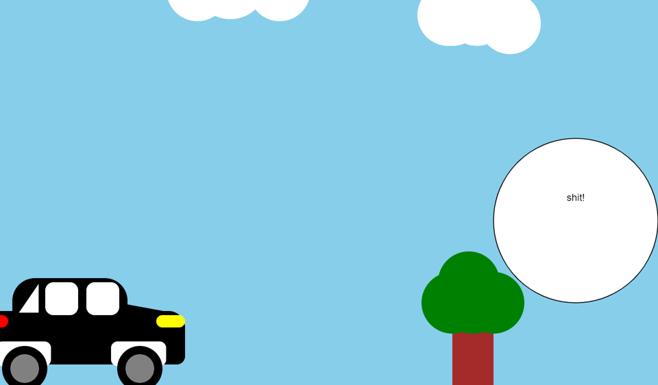
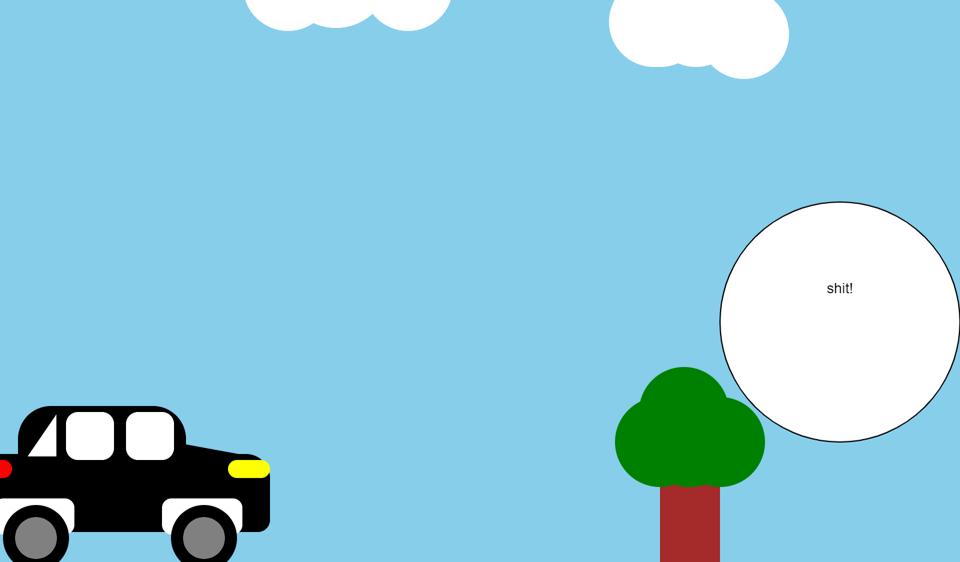

Comicbook
De strip vond ik een zeer moeilijke opdracht omdat Het zeer precies moest zijn en alles moet kloppen. Javascript was sowieso wat moeilijker voor mij, ik weet niet waarom maar ik leerde het trager. Maar ik denk dat het resultaat nog wel voldoende is. Ik denk dat ik een iets was vergeten dat in de minimale vereiste stond en daardoor had ik een E. Het idee is er redelijk goed uigekomen, de auto had ik al gemaakt in een vorige taak dus dat kwam goed uit. En de boom heb ik zelf getekend.